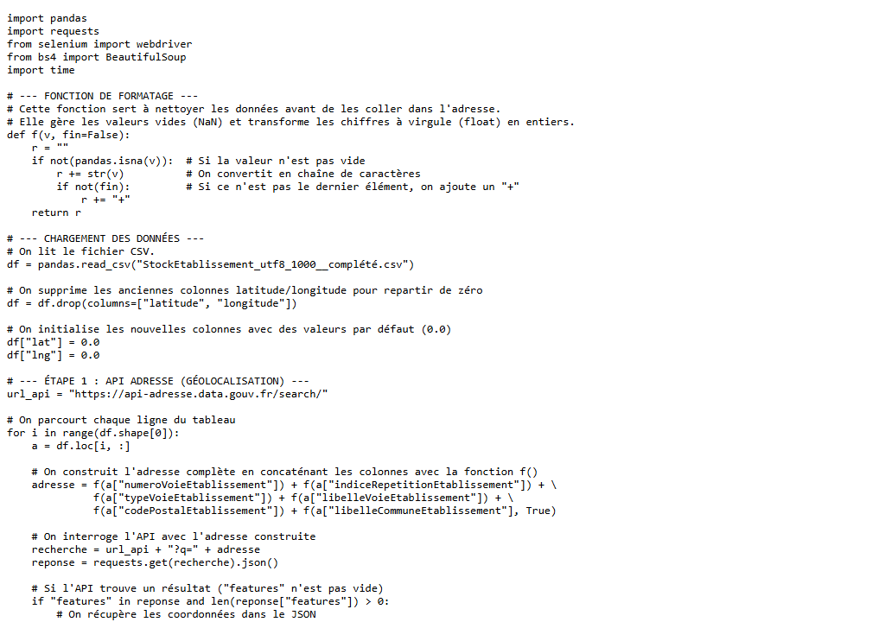
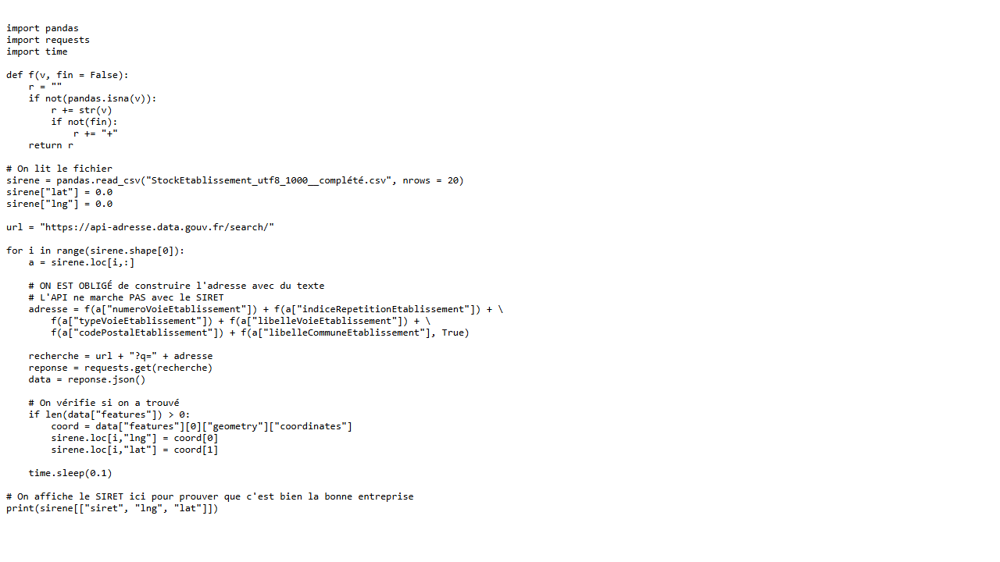

| Nom de la SAE | WebScraping et enrichissement de données par API | |||
| Sujet spécifique | Enrichissement d'un fichier d'établissements (SIRET) avec des coordonnées GPS via l'API adresse.data.gouv.fr et collecte de données complémentaires par webscraping (Selenium, BeautifulSoup). |
| Objectifs |
Automatiser la collecte et l'enrichissement de données à partir de sources web et d'APIs REST. Utiliser Python (requests, Selenium, BeautifulSoup) pour scraper des pages dynamiques. Consommer l'API adresse.data.gouv.fr pour géolocaliser des établissements. Nettoyer et structurer les données enrichies dans un fichier CSV. |
| Livrables | Scripts Python (D.py, S2.py, S3.py), fichiers CSV enrichis avec coordonnées GPS |
| Compétence | Développer |
| Apprentissages critiques sollicités | AC24.01VCOD : Comprendre le rôle fondamental de l'analyse des besoins et de l'existant dans un projet décisionnel (architecture, visualisation...) |
| AC24.02VCOD : Percevoir les enjeux de l'automatisation et de l'interopérabilité d'un ensemble de tâches | |
| AC24.03VCOD : Prendre conscience des différences entre outils (logiciels, langages) pour choisir le plus adapté | |
| Composantes essentielles à respecter | Analyser le besoin (géolocalisation d'établissements) avant de choisir l'outil adapté (API vs scraping). |
| Automatiser les appels API en boucle et assurer l'interopérabilité avec le CSV d'entrée. | |
| Choisir Python (requests, Selenium, BeautifulSoup) comme langage adapté à la collecte web. |
| Compétence | Traiter |
| Apprentissages critiques sollicités | AC21.01 : Comprendre l'organisation des données de l'entreprise |
| AC21.03 : Identifier et résoudre les problèmes d'intégration de sources complémentaires et hétérogènes | |
| AC21.04 : Comprendre la nécessité de tester, corriger et documenter un programme | |
| AC21.05 : Apprécier l'intérêt de briques logicielles existantes et savoir les utiliser | |
| Composantes essentielles à respecter | Comprendre la structure du fichier SIRET (colonnes, types, valeurs manquantes) avant de l'enrichir. |
| Résoudre les problèmes d'intégration (NaN, encodage, valeurs NULL renvoyées par l'API). | |
| Utiliser les bibliothèques existantes (pandas, requests) plutôt que tout réécrire. |
| Compétence | Analyser |
| Apprentissages critiques sollicités | AC22.05 : Apprécier les limites de validité et les conditions d'application d'une analyse |
| Composantes essentielles à respecter | Vérifier la qualité des coordonnées GPS retournées (cohérence géographique, score de confiance de l'API). |
| Connaître les limites : taux de réponse de l'API, adresses non trouvées, doublons. |
| Compétence | Valoriser |
| Apprentissages critiques sollicités | AC23.01 : Saisir l'intérêt de mobiliser de manière proactive les ressources métiers liées à l'environnement (y compris économique, international...) |
| AC23.02 : Savoir défendre ses choix d'analyses | |
| Composantes essentielles à respecter | Exploiter l'API publique de l'État (adresse.data.gouv.fr) comme ressource métier disponible gratuitement. |
| Justifier le choix de l'API vs scraping selon le type de donnée à collecter. |
| Savoirs / connaissances | Savoir-faire | Savoir-être |
|---|---|---|
|
Protocoles HTTP/REST, structure JSON. Format HTML/CSS (pour le parsing avec BeautifulSoup). Fonctionnement de l'API adresse.data.gouv.fr. Gestion des données tabulaires avec pandas. |
Écrire des scripts Python structurés et commentés. Utiliser requests pour les appels API et BeautifulSoup pour le scraping. Automatiser le traitement ligne par ligne sur un DataFrame pandas. Gérer les erreurs et les valeurs manquantes (pandas.isna). |
Autonomie dans la résolution des problèmes techniques. Rigueur (respect des conditions d'utilisation des APIs). Persévérance face aux blocages (pagination, erreurs HTTP). Curiosité pour les nouvelles sources de données. |
Ce que je trouve bien réalisé, pourquoi ?
Le script D.py est bien structuré et commenté : la fonction de formatage des adresses (f()) permet de gérer proprement les valeurs manquantes avant d'envoyer les requêtes à l'API. La géolocalisation automatique de 1 000 établissements à partir de leurs adresses est fonctionnelle et produit un CSV enrichi exploitable.
Ce que je n'ai pas bien compris ; ce qui serait à améliorer pour une prochaine fois : pourquoi ? comment ?
La gestion de Selenium pour les pages dynamiques était plus complexe que prévu (chargement asynchrone, délais). Pour une prochaine fois : anticiper la gestion des délais entre requêtes pour ne pas surcharger les serveurs ; tester sur un petit échantillon avant de lancer sur l'ensemble des données.

